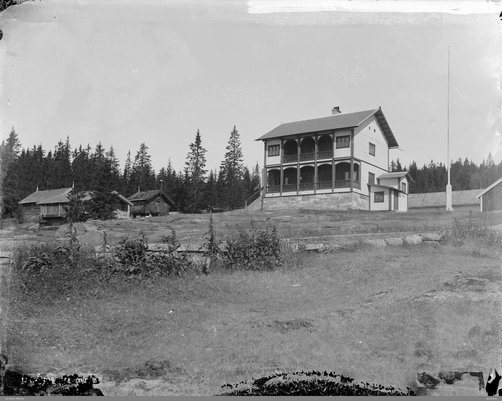
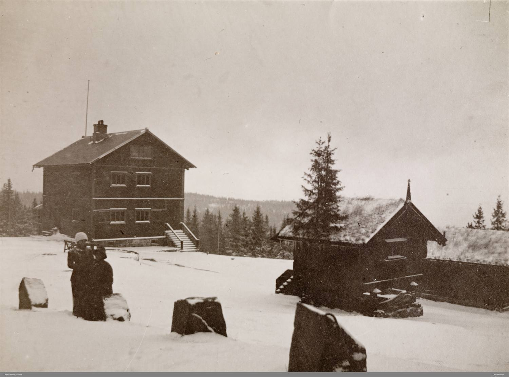

Villaen som åpnet veien til naturen
Вілла, що відкрила шлях до природи
The villa that opened the way to nature
La villa che aprì la strada alla natura
Like nedenfor Frognerseteren Restaurant ligger et tun mange turgåere passerer uten å kjenne historien bak. Her bodde og tok Thomas Heftye imot gjester – en rik bankmann som ville gjøre skogen og fjellet tilgjengelig for langt flere.

Heftyetunet består av fem bygninger og har utsikt over Oslo og fjorden. Hovedbygningen er Heftyevillaen, oppført i 1867. Thomas Heftye fikk også bygget stabburet, mens tre eldre hus ble fraktet hit fra Hallingdal og Telemark.
Bankmannen som tok skogen til folket
Thomas Heftye levde fra 1822 til 1886. Familien hadde tjent seg rik på blant annet bank og finans, men Heftye var også opptatt av kunst, natur og friluftsliv. På midten av 1800-tallet var mange av områdene rundt byen vanskelige å nå for folk flest. Heftye kjøpte skogområder ved blant annet Tryvann og Frognerseteren og arbeidet for at flere skulle få oppleve naturen.
Tanken hans var enkel: det skulle være lett og rimelig for mange å komme seg ut og se det vakre i landet. Heftye var en viktig drivkraft da Den Norske Turistforening ble stiftet i 1868, og han ble foreningens første formann. Han var også opptatt av merkede stier og åpne hytter.

Tryvann og veien opp
Ved Tryvann fikk Heftye reist det første utsiktstårnet – en forløper til dagens Tryvannstårn. Før tårnet kunne tas i bruk, måtte det også bygges vei opp. Veien het først Keiser Wilhelms vei og heter i dag Holmenkollveien.
Berømte gjester
Heftyevillaen har hatt flere berømte gjester. USAs tidligere president Ulysses S. Grant besøkte Thomas Heftye her i 1878. I 1948 kom Winston Churchill, som både hadde vært og senere igjen skulle bli britisk statsminister. Et møte i villaen i mars 1990 ble dessuten starten på fredsprosessen som førte fram til Osloavtalen mellom Israel og PLO.

Tre flyttede tømmerhus
De tre småhusene på tunet har også sine egne historier. Gulsvikstuen ble hentet fra Flå i Hallingdal. Inne er den dekorert med malerier av geiter og kalles derfor også Geitestuen. Nyhusstuen fra Torpo ble bygd på 1740-tallet av Torkild Villand, som hadde hentet inspirasjon fra europeisk arkitektur under et opphold i København. Årestuen kommer fra Gransherad i Telemark og kan være fra 1700-tallet eller enda eldre.

Heftyetunet i dag
Kristiania kommune kjøpte eiendommen i 1889. Heftyetunet ble Norges første friluftsmuseum, men er i dag stengt for vanlig publikum. Villaen brukes hovedsakelig til møter og representasjon for Oslo kommune. Under skirenn går løypene rett nedenfor skigarden – slik mange har sett under de berømte femmilene i Holmenkollen.

Трохи нижче від ресторану Frognerseteren розташований двір, повз який багато туристів проходить, не знаючи його історії. Тут жив і приймав гостей Thomas Heftye — заможний банкір, який прагнув зробити ліс і гори доступними для значно ширшого кола людей.
Двір Heftye складається з п’яти будівель і має краєвид на Осло й фіорд. Головна споруда — вілла Heftye, зведена у 1867 році. Thomas Heftye також збудував комору, а ще три давніші будинки перевезли сюди з Hallingdal і Telemark.
Банкір, що подарував людям ліс
Thomas Heftye жив з 1822 до 1886 року. Його родина розбагатіла, зокрема, на банківській справі та фінансах, але самого Heftye цікавили також мистецтво, природа й відпочинок на свіжому повітрі. У середині XIX століття багато околиць міста були важкодоступні для простих людей. Heftye купив лісові угіддя, зокрема біля Tryvann і Frognerseteren, та працював над тим, щоб якомога більше людей могли побачити природу.
Його ідея була проста: вибратися на природу й побачити красу країни мало бути легко й недорого. Heftye став однією з головних рушійних сил при заснуванні Норвезького туристичного товариства (Den Norske Turistforening) у 1868 році і був першим головою товариства. Він також дбав про маркування стежок і відкриті туристичні хатини.
Tryvann і дорога нагору
Біля Tryvann Heftye збудував першу оглядову вежу — попередницю сьогоднішнього Tryvannstårnet. Перш ніж вежу можна було використовувати, до неї потрібно було прокласти дорогу. Спочатку вона мала назву Keiser Wilhelms vei, а сьогодні називається Holmenkollveien.
Видатні гості
Вілла Heftye приймала кількох знаменитих гостей. Колишній президент США Ulysses S. Grant відвідав Thomas Heftye тут у 1878 році. У 1948 році сюди приїхав Winston Churchill, який і раніше був, і згодом знову став прем’єр-міністром Великої Британії. Зустріч на віллі у березні 1990 року, крім того, стала початком мирного процесу, що завершився Ословською угодою між Ізраїлем і ОВП.
Три перевезені дерев’яні хати
У трьох маленьких будиночків на дворі також є свої історії. Gulsvikstuen («хата з Gulsvik») перевезли з Flå у Hallingdal. Усередині вона оздоблена малюнками кіз, через що її називають ще Geitestuen («козячою хатою»). Nyhusstuen з Torpo звели у 1740-х роках; її будівничий Torkild Villand надихався європейською архітектурою під час перебування у Копенгагені. Årestuen («хата з відкритим вогнищем») походить із Gransherad у Telemark і може бути зведена у XVIII столітті — або навіть раніше.
Двір Heftye сьогодні
Місто Крістіанія (тодішня назва Осло) придбало садибу у 1889 році. Двір Heftye став першим у Норвегії музеєм просто неба, але сьогодні він зачинений для широкої публіки. Вілла переважно використовується для зустрічей і представницьких заходів Осло. Під час лижних змагань траси проходять прямо під огорожею садиби — як це не раз бачили глядачі знаменитих 50-кілометрових перегонів у Holmenkollen.
Just below Frognerseteren Restaurant lies a farmstead that many walkers pass without knowing the story behind it. Here Thomas Heftye lived and received guests – a wealthy banker who wanted to make the forest and the mountains accessible to far more people.
The Heftye farmstead consists of five buildings and overlooks Oslo and the fjord. The main building is the Heftye villa, built in 1867. Thomas Heftye also had the storehouse built, while three older houses were transported here from Hallingdal and Telemark.
The banker who brought the forest to the people
Thomas Heftye lived from 1822 to 1886. The family had grown rich on, among other things, banking and finance, but Heftye was also keen on art, nature and outdoor life. In the mid-1800s, many of the areas around the city were hard for ordinary people to reach. Heftye bought forest areas at Tryvann and Frognerseteren, among other places, and worked to let more people experience nature.
His idea was simple: it should be easy and affordable for many to get out and see the beauty of the country. Heftye was a major driving force when the Norwegian Trekking Association (Den Norske Turistforening) was founded in 1868, and he became the association's first chairman. He was also concerned with marked trails and open cabins.
Tryvann and the road up
At Tryvann, Heftye had the first viewing tower built – a forerunner of today's Tryvann Tower. Before the tower could be used, a road also had to be built up to it. The road was first called Keiser Wilhelms vei and is today named Holmenkollveien.
Famous guests
The Heftye villa has had several famous guests. Former US president Ulysses S. Grant visited Thomas Heftye here in 1878. In 1948 came Winston Churchill, who had both been and would later again become British prime minister. A meeting in the villa in March 1990 was moreover the start of the peace process that led to the Oslo Accords between Israel and the PLO.
Three relocated timber houses
The three small houses on the farmstead also have stories of their own. Gulsvikstuen was brought from Flå in Hallingdal. Inside it is decorated with paintings of goats and is therefore also called Geitestuen (the Goat House). Nyhusstuen from Torpo was built in the 1740s by Torkild Villand, who had drawn inspiration from European architecture during a stay in Copenhagen. Årestuen (the Hearth House) comes from Gransherad in Telemark and may date from the 1700s or even earlier.
The Heftye farmstead today
The municipality of Kristiania bought the property in 1889. The Heftye farmstead became Norway's first open-air museum, but is today closed to the general public. The villa is mainly used for meetings and official functions for the City of Oslo. During ski races the tracks run right below the farmstead's snake fence – as many have seen during the famous 50-kilometre races at Holmenkollen.
Poco sotto il ristorante Frognerseteren si trova un piccolo complesso che molti escursionisti superano senza conoscerne la storia. Qui Thomas Heftye abitava e riceveva ospiti: un ricco banchiere che voleva rendere il bosco e la montagna accessibili a molte più persone.
Il complesso Heftye è formato da cinque edifici e guarda su Oslo e sul fiordo. L'edificio principale è la villa Heftye, costruita nel 1867. Thomas Heftye fece costruire anche il granaio, mentre tre case più antiche furono trasportate qui da Hallingdal e Telemark.
Il banchiere che portò il bosco alla gente
Thomas Heftye visse dal 1822 al 1886. La famiglia si era arricchita tra l'altro con le banche e la finanza, ma Heftye era anche interessato all'arte, alla natura e alla vita all'aperto. A metà Ottocento molte aree intorno alla città erano difficili da raggiungere per la maggior parte delle persone. Heftye acquistò zone boschive, tra cui Tryvann e Frognerseteren, e lavorò perché più persone potessero vivere la natura.
La sua idea era semplice: doveva essere facile ed economico per molti uscire e vedere la bellezza del paese. Heftye fu una forza importante quando Den Norske Turistforening, il Club turistico norvegese, fu fondato nel 1868, e ne divenne il primo presidente. Si interessò anche ai sentieri segnati e alle baite aperte.
Tryvann e la strada verso l'alto
A Tryvann Heftye fece costruire la prima torre panoramica, un predecessore dell'attuale Tryvannstårnet. Prima che la torre potesse essere usata, bisognava anche costruire una strada per arrivarci. All'inizio la strada si chiamava Keiser Wilhelms vei; oggi si chiama Holmenkollveien.
Ospiti famosi
La villa Heftye ha avuto diversi ospiti celebri. L'ex presidente degli Stati Uniti Ulysses S. Grant visitò Thomas Heftye qui nel 1878. Nel 1948 arrivò Winston Churchill, che era già stato e sarebbe poi tornato a essere primo ministro britannico. Inoltre, un incontro nella villa nel marzo 1990 fu l'inizio del processo di pace che portò agli Accordi di Oslo tra Israele e l'OLP.
Tre case di legno trasferite
Anche le tre piccole case del complesso hanno storie proprie. Gulsvikstuen fu portata da Flå, in Hallingdal. All'interno è decorata con dipinti di capre, e per questo viene chiamata anche Geitestuen, la "casa delle capre". Nyhusstuen, da Torpo, fu costruita negli anni 1740 da Torkild Villand, che aveva tratto ispirazione dall'architettura europea durante un soggiorno a Copenaghen. Årestuen, la casa con il focolare, viene da Gransherad nel Telemark e può risalire al Settecento o persino a un'epoca precedente.
Il complesso Heftye oggi
Il comune di Kristiania acquistò la proprietà nel 1889. Il complesso Heftye divenne il primo museo all'aperto della Norvegia, ma oggi è chiuso al pubblico ordinario. La villa viene usata soprattutto per incontri e funzioni di rappresentanza del Comune di Oslo. Durante le gare di sci le piste passano proprio sotto la staccionata, come molti hanno visto durante le celebri 50 chilometri di Holmenkollen.
Kilder
Her er du
Slik blir du med på jakten
Finn stolpene rundt om i Vestre Aker, skann QR-koden og les historien om hvert sted. Velg et kallenavn – så samler du poeng for hvert nye sted du besøker. Ingen innlogging, ingen app.
Se kart og kom i gang